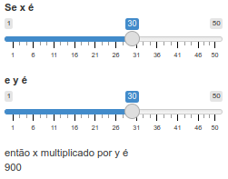

Capítulo 9 Introdução ao Shiny
Para começar a trabalhar com Shiny, primeiro instale o pacote:
Para criar um novo app, salvar um script com a extensão .R, exemplo app.R. A partir disso, pode adicionar rapidamente o modelo do aplicativo digitando “shinyapp” e pressionando Shift+Tab.
A estrutura de um App Shiny, é composta de:
1. Interface do Usuário (UI): A UI define a aparência do aplicativo - o que o usuário vê e com o que interage.
2. Servidor (Server): O servidor contém a lógica do aplicativo - como ele responde às interações do usuário.
3. Função que combina ambos UI e Server: Para criar o aplicativo, combinamos a UI e o servidor com a função shinyApp(ui = ui, server = server)
RunApp: executa o aplicativo
Stop (no RStudio) ou fechar a janela do app: encerra o aplicativo
9.1 Adicionando controles de UI
library(shiny)
ui <- fluidPage(
selectInput("dataset", label = "Dataset",
choices = ls("package:datasets")),
verbatimTextOutput("summary"),
tableOutput("table")
)
server <- function(input, output, session) {
}
shinyApp(ui, server)fluidPage(): função de layout que define a estrutura visual básica da página.selectInput(): controle de entrada que permite ao usuário interagir com o aplicativo fornecendo um valor. Neste caso, é uma caixa de seleção com o rótulo “Dataset” e permite escolher um dos conjuntos de dados que vêm com o R.verbatimTextOutput()etableOutput(): controles de saída que informam ao Shiny onde colocar a saída renderizada.verbatimTextOutput()exibe código etableOutput()tabelas.- Vemos apenas a entrada, não as duas saídas, porque ainda não informamos ao Shiny como a entrada e as saídas estão relacionadas.
9.2 Adicionando comportamento ao Server
library(shiny)
ui <- fluidPage(
selectInput("dataset", label = "Dataset",
choices = ls("package:datasets")),
verbatimTextOutput("summary"),
tableOutput("table")
)
server <- function(input, output, session) {
output$summary <- renderPrint({
dataset <- get(input$dataset, "package:datasets")
summary(dataset)
})
output$table <- renderTable({
dataset <- get(input$dataset, "package:datasets")
dataset
})
}
shinyApp(ui, server)output$ID: indica que você está fornecendo a receita para a saída do Shiny com esse ID.- Funções de renderização (render{Type}): encapsulam o código fornecido.
- Cada função render{Type} é projetada para produzir um tipo específico de saída (texto, tabelas e gráficos) e geralmente é pareada com uma função {type}Output. Exemplo,
renderPrint()é pareado comverbatimTextOutput()erenderTable()é pareado comtableOutput().
Observações:
- O resumo e a tabela são atualizados sempre que você altera o conjunto de dados de entrada.
- Essa dependência é criada implicitamente, pois utilizamos
input$datasetnas funções de saída. input$dataseté preenchido com o valor atual do componente de interface do usuário com iddatasete fará com que as saídas sejam atualizadas automaticamente sempre que esse valor for alterado.- Essa é a essência da reatividade: as saídas reagem (recalculam) automaticamente quando suas entradas são alteradas.
9.3 Expressões Reativas
São usadas para evitar códigos duplicados. No exemplo anterior, o código a seguir é repetido 2 vezes.
Para criar uma expressão reativa:
Para chamar o seu valor, usamos: expressao_reativa().
A expressão reativa só é executada na primeira vez que é chamada e, em seguida, armazena o resultado em cache até que ele precise ser atualizado, deixando o código mais eficiente.
Atualizando o app com a expressão reativa:
library(shiny)
ui <- fluidPage(
selectInput("dataset", label = "Dataset",
choices = ls("package:datasets")),
verbatimTextOutput("summary"),
tableOutput("table")
)
server <- function(input, output, session) {
# Create a reactive expression
dataset <- reactive({
get(input$dataset, "package:datasets")
})
output$summary <- renderPrint({
# Use a reactive expression by calling it like a function
summary(dataset())
})
output$table <- renderTable({
dataset()
})
}
shinyApp(ui, server)O aplicativo se comporta de forma idêntica, mas funciona um pouco mais eficientemente, pois só precisa recuperar o conjunto de dados uma vez, e não duas.
Exercícios da seção 1.8
1. Crie um aplicativo que cumprimente o usuário pelo nome. Considerando as funções abaixo, organize e identifique quais delas serão necessárias para esta finalidade.
tableOutput("mortgage")
output$greeting <- renderText({
paste0("Hello ", input$name)
})
numericInput("age", "How old are you?", value = NA)
textInput("name", "What's your name?")
textOutput("greeting")
output$histogram <- renderPlot({
hist(rnorm(1000))
}, res = 96)2. Suponha que seu amigo queira criar um aplicativo que permita ao usuário definir um número (x) entre 1 e 50 e exiba o resultado da multiplicação desse número por 5. Esta é a primeira tentativa dele:
library(shiny)
ui <- fluidPage(
sliderInput("x", label = "If x is", min = 1, max = 50, value = 30),
"then x times 5 is",
textOutput("product")
)
server <- function(input, output, session) {
output$product <- renderText({
x * 5
})
}
shinyApp(ui, server)Mas infelizmente tem um erro. Você pode ajudá-lo a encontrar e corrigir o erro?
3. Expanda o aplicativo do exercício anterior para permitir que o usuário defina o valor do multiplicador, y, para que o aplicativo produza o valor de x * y. O resultado final deve ser semelhante a este:

Respostas
## 1.
library(shiny)
ui <- fluidPage(
textInput("name", "What's your name?"),
textOutput("greeting")
)
server <- function(input, output, session) {
output$greeting <- renderText({
paste0("Hello ", input$name)
})
}
shinyApp(ui, server)
## 2.
O erro aqui surge porque, no lado do servidor, precisamos escrever
input$x em vez de x.
## 3.
Vamos adicionar outro sliderInput com ID y e usar ambos input$x e input$y
para calcular output$product.
library(shiny)
ui <- fluidPage(
sliderInput("x", label = "If x is", min = 1, max = 50, value = 30),
sliderInput("y", label = "and y is", min = 1, max = 50, value = 30),
"then x multiplied by y is",
textOutput("product")
)
server <- function(input, output, session) {
output$product <- renderText({
input$x * input$y
})
}
shinyApp(ui, server)